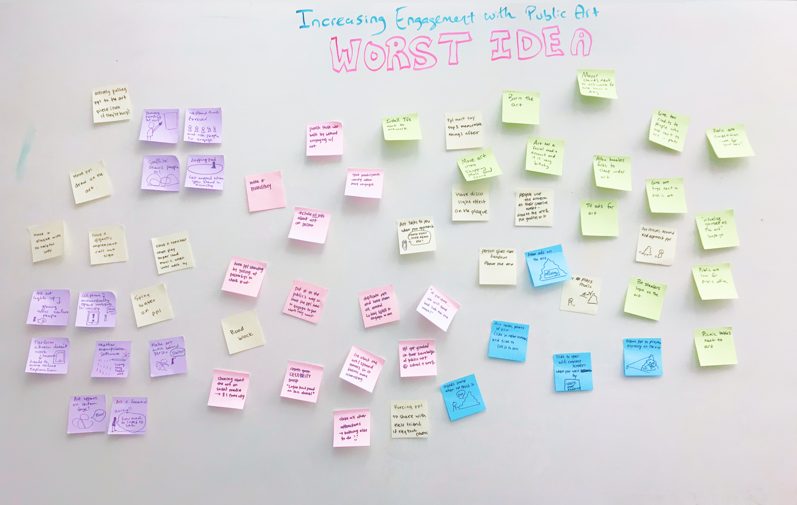
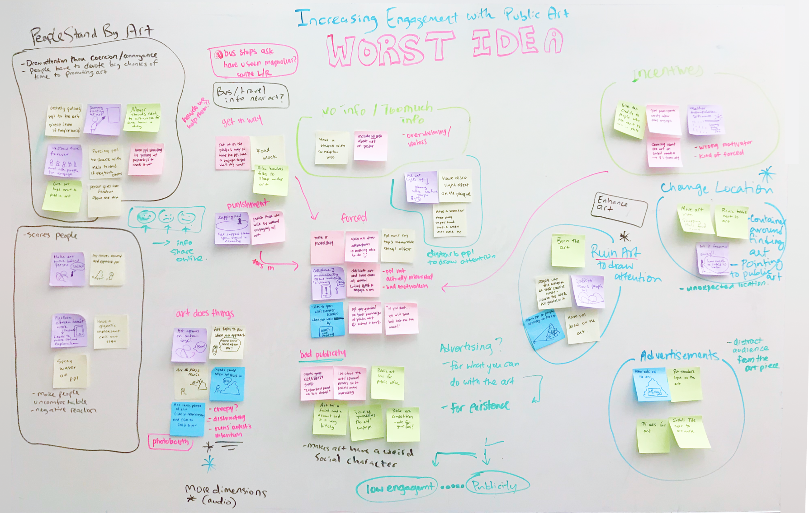

Metro21: Smart Cities Institute, Seven weeks (Fall 2019)
Aaron Bishop, Aditi Magal, Emily Yang, Haley Park
User Researcher: co-designed research studies and synthesis activities
Prototyping Lead: utilized a lazer cutter to create a prototype
We were asked to help the City of Pittsburgh better engage citizens with its memorial and public art programs -- sharing knowledge about those works and allowing active participation.
We recognized that one of the reasons why interest in public art is low is that people who have already seen the piece are less motivated to engage with the art when the content / conversation surrounding the public art is static. One way we thought to tackle this problem space was to encourage creative engagement and dynamic interactions.
Looking Glass is an interactive board placed near a public art installation that viewers of public art can draw on to decorate the art, write on to interpret the piece or comment on others' drawings and to use to take photographs of the augmented view.
It has four core pillars:
An inclusive way for local residents to collectively create and generate thoughts and opinions about the public art piece
An augmented way for local residents to see through a lens where they can contribute to the art without modifying the original piece
A novel way to see the art, to inspire new ways to interpret the art and maintain engagement with residents
A salient way to attract people to engage with the medium by providing a tangible device at the location of public art

Observed if/ how people currently engage with public art and learn what their experiences are
Transcribed 8 interviews and grouped similar quotes to find common themes. We found:
Ideated a variety of possible solutions without any contraints to be as creative as possible
 Learned if users relate to scenarios and if there is an actual need for the solution
Determined the suitability of AR for creating a new dimension for people to interact with public art
Tested our protoype to determine if people want to engage with public art and share their contribution


Pennsylvania Prison Society, Fifteen weeks (Spring 2020)
Elliot Allard, Jiayi Zhao, Jennifer Kong, Zoe Lin
Client Liason: point of contact for both the client and faculty advisor
User Test Coordinator: prepared and lead usability research
Pennsylvania Prison Society (PPS) is a non-profit that advocates for incarcerated individuals by hearing their concerns/ problems (via "requests") and communicating their needs to the Warden. We were asked to help PPS in the development of a workflow system to be utilized by over 250+ volunteers across the state.
The organization has 43 chapters throughout Pennsylvania, and each functions differently due to various factors such as size of the chapter, number of requests, and relationship with the prison. Because of this, there isn't a standardized way for the central office to receive regular updates from individual chapters which hinders the organization from recognizing their impact as a whole.
Render is a request managing system where requests can be uploaded and delegated to volunteers, updated with actionable items post-visit, and analyzed to identify common problems and trends. To make visit reports as convinient as possible, we also propose that an Interactive Voice Response (IVR) be created.
It is designed on four central ideas:
A system that allows documents to be easily shared and accessed by chapters and the central office
A required log in that indicates which features and information are relevant to the individual, based on their role in the organization
A summary of the type of requests the organization receives to notice trends of problems across the state to tackle systemic issues
A clean and simple design that is straightforward for anyone to use, especially those who aren't well experienced with technology

Learned how the organization functions, from the role of different stakeholders and the intake of requests
Synthesized information and visually represented the interactions between stakeholders, and identified pain points regarding:

Shadowed volunteers on their visit to a prison and observed a chapter meeting. Key insights include:
Focused on the experiences of an official volunteer and the prosses they go through when they are assigned to address a request. Identified more pain points:
Brainstormed 8 possible solutions in 8 minutes to quickly ideate features and systems. Ideas were centered around:
Created storyboards and asked participants to envision using the proposed tool in given scenario. Recorded their thoughts.

Created a web-based


Determined the usability of the designs (web interface and IVR) by asking volunteers to perform tasks
...
...
...
...